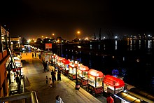
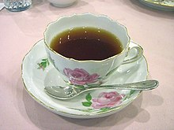

Pakistani cuisine is similar to that of other regions of South Asia, with
some of it being originated from the royal kitchens of 16th-century Mughal emperors.Most of those dishes have
their roots in British, Indian, Central Asian and Middle Eastern cuisine. Unlike Middle Eastern cuisine,
Pakistani cooking uses large quantities of spices, herbs, and seasoning. Garlic, ginger, turmeric, red chili, and
garam masala are used in most dishes, and home cooking regularly includes curry, roti, a thin flatbread made from
wheat, is a staple food, usually served with curry, meat, vegetables, and lentils. Rice is also common; it is
served plain, fried with spices, and in sweet dishes.
Lassi is a traditional drink in the Punjab region. Black tea with milk and sugar is popular throughout Pakistan
and is consumed daily by most of the population. Sohan halwa is a popular sweet dish from the southern
region of Punjab province and is enjoyed all over Pakistan. The consumption of tea in Pakistan, called chai
(چائے), in Urdu, is of central significance to Pakistani culture.
It is one of the most consumed beverages in
Pakistani cuisine. Pakistan does produce its own limited tea in Shinkiari farms, however it ranks as the third
largest importer of tea in the world. In 2003, as much as 109,000 tonnes of tea were consumed in Pakistan,
ranking it at seven on the list of tea-consuming countries in the world.
Pakistani tea was praised by Abhinandan Varthaman, an Indian Airforce
Pilot who was shot down by Pakistan Air Force and captured by Pakistan Army for violating Pakistani airspace
during Operation Swift Retort. In a video released by ISPR, Wing Commander Abhinandan is seen conversing with
Pakistan military officials in a congenial environment and acknowledging that he has been treated well while
enjoying Pakistani Tea. Upon being asked about the tea, Abhinandan replied "The tea is fantastic".[48] This became
a catchphrase in Pakistan as customers began using it to order tea.

The name for Three Cups of Tea, a bestselling book by American mountaineer and educator Greg Mortenson, is taken
from the Balti proverb in northern Pakistan: "The first time you share tea with a Balti, you are a stranger. The
second time you take tea, you are an honored guest. The third time you share a cup of tea, you become
family..."
The British documentary film Tracing Tea briefly covers tea culture in Pakistan.
Pak Tea House – a tea cafe in Lahore famously known for being visited by prominent academic intellectuals and
literary personalities from all walks of life.